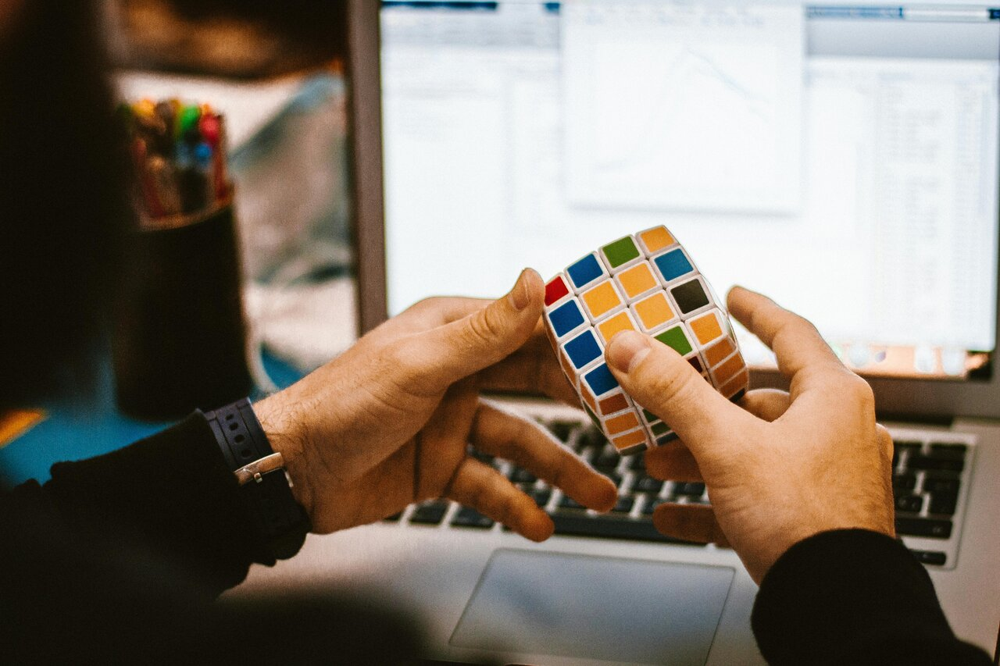

Home Page
Any sort of self improvement involves setting and achieving goals! Here are some tips for just that:
Understanding the Habit Loop: Breaking Free from Harmful Patterns To conquer bad habits, it’s
essential to comprehend the habit loop. This cycle consists of four stages: cue, craving, response, and reward.
First, a cue triggers the habit. Next, a craving arises, motivating a specific response. This response provides
a reward, satisfying the desire associated with the cue. Over time, this neurological feedback loop solidifies
the habit. To break free, consider these strategies:
Quit Cold Turkey: While challenging, abstaining entirely from the bad habit can prove your capability for change.
Change Your Habit Loop: Overwrite the old habit with a new routine. Strengthen the new behavior to make it more
resilient against relapses.

Small Steps, Big Impact: Reprogramming Your Behavior Recent research reveals that habits are stored differently in the
brain compared to standard memories. Rather than erasing old habits, focus on replacing them. Here’s how:
Identify Triggers: Recognize the cues that lead to your bad habit.
Visualize Success: Imagine yourself overcoming tempting situations.
Replace with Healthy Habits: Swap harmful behaviors with positive ones (e.g., exercise instead of partying).
Seek Support: Friends, family, or a coach can provide encouragement and accountability.
Consistency and Persistence: Building New Pathways To achieve your goals and break free from bad habits, establish good practices:
Track Your Habits: Use tools to monitor your progress. Set streak targets for consistent behavior.
Set Realistic Goals: Break down your objectives into manageable steps.
Create Reminders: Keep your focus sharp by setting reminders.
Stay Resilient: Even if you slip up, remember that persistence pays off. Over time, your new habits will replace the old ones, leading to lasting change4.
Remember, change takes time and effort. Celebrate small victories along the way, and stay committed to your journey of self-improvement! 🌟